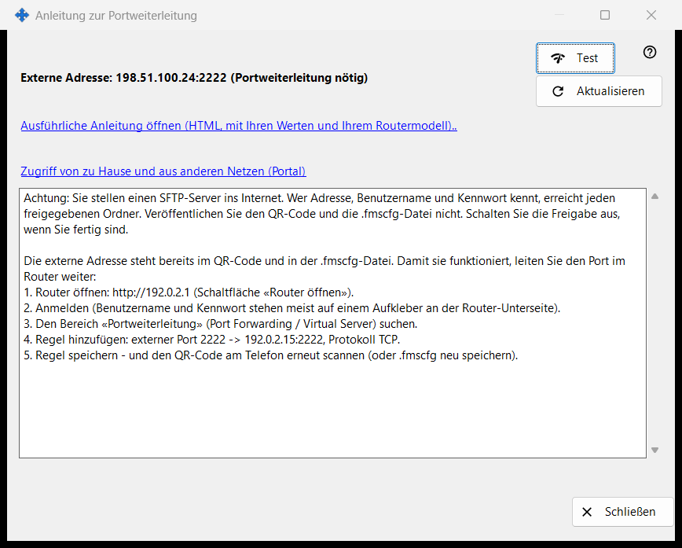
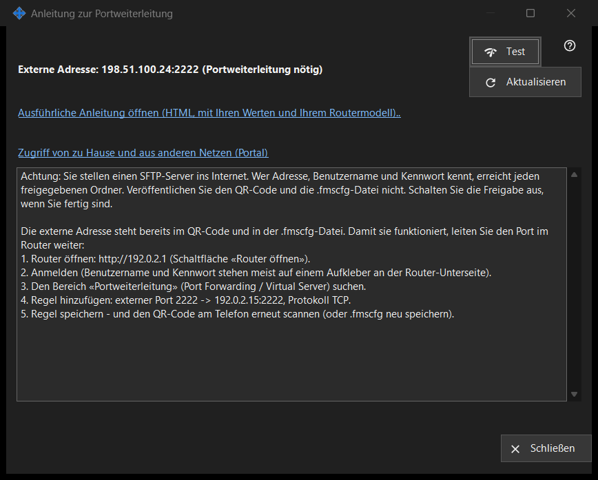

Anleitung zur Portweiterleitung
Verwendungszweck
Hilft dabei, die Freigabe von außerhalb Ihres Heimnetzes erreichbar zu machen. Es zeigt die externe Adresse und ob der Port automatisch geöffnet wurde oder im Router weitergeleitet werden muss, und bietet einen Test sowie eine ausführliche Anleitung an. Es öffnet sich über die Schaltfläche «Internetzugriff einrichten» des Hauptfensters.


In dieser Reihenfolge
- Starten Sie zuerst die Freigabe; sonst fordert das Fenster Sie dazu auf.
- Lesen Sie die Statuszeilen: erreichbar, hinter CGNAT oder Portweiterleitung nötig.
- Ist eine Weiterleitung nötig, öffnen Sie die ausführliche Anleitung und legen die Regel im Router an.
- Drücken Sie «Test», um die Adresse von diesem PC aus zu prüfen.
- Bestätigen Sie es vom Telefon aus über mobile Daten bei ausgeschaltetem WLAN.
Die Elemente
Status
Das Fenster ermittelt die externe Adresse und meldet eines von: «Aus dem Internet erreichbar», «Externe Adresse: .. (Portweiterleitung nötig)», «Externe Adresse unbekannt - im Router nachsehen.» oder «Hinter CGNAT - von außen nicht erreichbar.». Wurde der Port automatisch geöffnet (UPnP), ist keine Router-Einrichtung nötig, doch ob es funktioniert, bestätigt nur das Telefon über mobile Daten. «Aktualisieren» wiederholt die Erkennung.
Router und Anleitungen
Die Router-Zeile zeigt dessen Adresse oder «Router wird erkannt..», solange gesucht wird. Der Link «Ausführliche Anleitung öffnen (HTML, mit Ihren Werten und Ihrem Routermodell)..» öffnet eine lokale HTML-Anleitung; lässt sie sich nicht öffnen, meldet das Fenster dies. Der Link «Zugriff von zu Hause und aus anderen Netzen (Portal)» öffnet die passende Seite des Hilfeportals im Browser.
Test
Prüft die externe Adresse von diesem PC aus und meldet «SFTP-Server erreichbar», «Port offen, aber keine SFTP-Antwort», eine geschlossene Verbindung (möglicherweise das Verbindungslimit) oder keine Antwort. Das Ergebnis ist nicht abschließend: Viele Router lehnen von innen eine Anfrage an ihre eigene externe Adresse ab, daher ist das Telefon mit mobilen Daten die verlässliche Prüfung.
Sicherheit
Wer SFTP ins Internet öffnet, gibt jedem, der Adresse, Benutzernamen und Kennwort erfährt, alle freigegebenen Ordner. Veröffentlichen Sie weder den QR-Code noch die .fmscfg-Datei und schalten Sie die Freigabe aus, wenn Sie fertig sind. «Schließen» verlässt das Fenster.
Managereinstellungen · SFTP-Freigabeeinstellungen · Einstellungen des Austauschservers